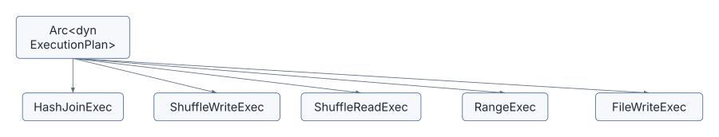
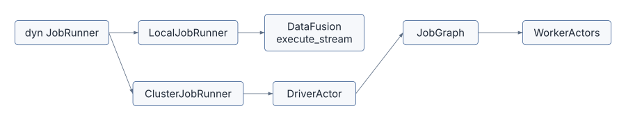
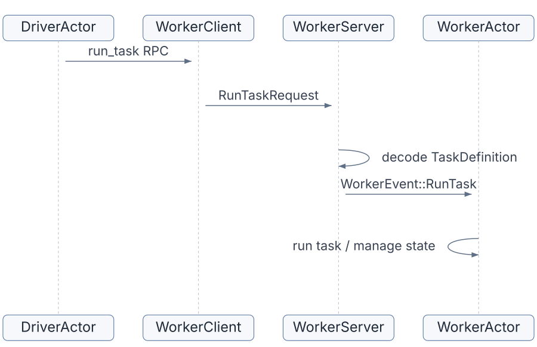

This chapter is not a full Rust tutorial. It is a map of the Rust ideas you need in order to read Sail without feeling like every file is speaking a private dialect.
Sail is an unusually good Rust learning project because it uses Rust for the things Rust is good at: explicit ownership, cheap shared references, trait-based interfaces, asynchronous services, structured errors, and safe concurrency. It is also a practical systems project, so these ideas show up under pressure. They are not decorative.
The core lesson is this:
Sail moves query plans and Arrow streams through a graph of typed interfaces.
Rust makes those interfaces explicit.When you see Arc<dyn ExecutionPlan>,
Box<dyn JobRunner>, SessionExtension, or
ActorHandle<DriverActor>, you are seeing the
architecture in Rust form.
Chapter 1 described Sail as a pipeline:
Spark Connect request
-> Sail spec
-> DataFusion LogicalPlan
-> DataFusion ExecutionPlan
-> local stream or distributed job graph
-> Arrow RecordBatch streamRust gives each boundary a type. A few types appear again and again:
| Rust pattern | Sail example | Why it matters |
|---|---|---|
Arc<T> |
Arc<AppConfig>,
Arc<dyn ExecutionPlan> |
Shared ownership across async tasks, sessions, plans, and workers |
Box<dyn Trait> |
Box<dyn JobRunner>,
Box<dyn ServerSessionMutator> |
Runtime choice among implementations |
Arc<dyn Trait> |
Arc<dyn ExecutionPlan>,
Arc<dyn QueryPlanner> |
Shared polymorphic query operators |
async_trait |
JobRunner, Actor, gRPC service traits |
Async methods in traits |
Result<T, E> |
PlanResult, ExecutionResult,
SparkResult |
Explicit error paths across planning, execution, and protocol layers |
| Typed extensions | SessionExtension |
Type-safe access to session services and configuration |
| Actor handles | ActorHandle<DriverActor> |
Message-passing control plane for distributed execution |
These are the vocabulary words of the Sail codebase. The rest of the chapter explains each one through files you have already touched in the architecture overview.
ArcArc<T> means “atomically reference-counted
pointer.” In practical terms, it lets multiple owners hold the same
value safely across threads. Sail needs that constantly because
sessions, runtimes, query plans, actors, and task contexts all outlive a
single function call.
Look at ServerSessionFactory in
crates/sail-session/src/session_factory/server.rs:
pub struct ServerSessionFactory {
config: Arc<AppConfig>,
runtime: RuntimeHandle,
system: Arc<Mutex<ActorSystem>>,
mutator: Box<dyn ServerSessionMutator>,
runtime_env: RuntimeEnvFactory,
catalog_cache_manager: Arc<CatalogCacheManager>,
}The factory does not own the global application config in a lonely
way. It shares it. The session factory, runtime environment factory,
catalog manager, worker manager, and driver setup can all receive clones
of the same Arc<AppConfig>.
Cloning an Arc does not clone the underlying config. It
increments a reference count:
let runtime_env = RuntimeEnvFactory::new(config.clone(), runtime.clone());That line is small, but it is one of Rust’s most important performance habits. Large shared state can be passed cheaply while ownership stays explicit.
DataFusion plans use the same idea. A physical plan in Sail is usually:
Arc<dyn ExecutionPlan>That reads as:
shared pointer to some concrete type that implements DataFusion's ExecutionPlan traitThe concrete type might be a DataFusion operator,
ShuffleWriteExec, ShuffleReadExec,
RangeExec, MapPartitionsExec,
FileWriteExec, or another Sail extension. The caller often
does not need to know. It needs the ExecutionPlan
interface.

The Arc part lets the plan be shared. The
dyn ExecutionPlan part lets the plan be polymorphic.
dyn TraitTraits define behavior. Trait objects let Sail pick an implementation at runtime.
The JobRunner trait in
crates/sail-common-datafusion/src/session/job.rs is the
cleanest example:
#[tonic::async_trait]
pub trait JobRunner: StateObservable<JobRunnerObserver> + Send + Sync + 'static {
async fn execute(
&self,
ctx: &SessionContext,
plan: Arc<dyn ExecutionPlan>,
) -> Result<SendableRecordBatchStream>;
async fn stop(&self, history: oneshot::Sender<JobRunnerHistory>);
}A JobRunner takes a DataFusion physical plan and returns
a stream of Arrow record batches. That is the interface. The
implementation depends on execution mode.
In ServerSessionFactory::create_job_runner, Sail
chooses:
let job_runner: Box<dyn JobRunner> = match self.config.mode {
ExecutionMode::Local => Box::new(LocalJobRunner::new()),
ExecutionMode::LocalCluster => { ... Box::new(ClusterJobRunner::new(...)) }
ExecutionMode::KubernetesCluster => { ... Box::new(ClusterJobRunner::new(...)) }
};This is runtime polymorphism. The rest of the session does not need to branch on local versus cluster every time it executes a query. It just calls:
service.runner().execute(ctx, plan).awaitThe object behind runner() decides what that means.
The same pattern appears in the extension proposal. A future
SailExtension trait would probably be used behind
Arc<dyn SailExtension> because Sail must hold a list
of unknown third-party extension implementations.
LocalJobRunner and ClusterJobRunner are a
small but powerful comparison.
The local runner executes the DataFusion physical plan directly:
Ok(execute_stream(plan, ctx.task_ctx())?)The cluster runner sends the same plan to a driver actor:
self.driver
.send(DriverEvent::ExecuteJob {
plan,
context: ctx.task_ctx(),
result: tx,
})
.await?;Same trait. Same method signature. Very different behavior.

This is one of the most important Rust design moves in Sail: put the architectural decision behind a trait, then pass the trait object through the rest of the system.
Send,
Sync, and 'staticYou will often see trait bounds like this:
pub trait JobRunner: StateObservable<JobRunnerObserver> + Send + Sync + 'staticThese are not noise.
Send means a value can be moved to another thread.
Sync means references to it can be shared across threads.
'static means the value does not contain borrowed
references that could expire while async tasks or background actors
still need it.
Sail is full of async tasks, actor messages, gRPC handlers, and
worker processes. If a service may be stored in a session, used by a
task, or held across an .await, Rust needs to know it is
safe to move and share.
The proposed extension API in discussion #2001 uses the same idea:
pub trait SailExtension: Send + Sync {
fn name(&self) -> &str;
...
}That bound is a design statement. Extensions are not just parser plugins. They may participate in planning and execution paths that cross async and distributed boundaries.
Rust traits do not natively support async methods in the most
ergonomic way for this kind of code, so Sail uses
#[tonic::async_trait] or #[async_trait].
You see it in three central places:
JobRunner, where execution returns an async
stream-producing result.Actor, where startup and shutdown may be async.The Actor trait in
crates/sail-server/src/actor.rs looks like this:
#[tonic::async_trait]
pub trait Actor: Sized + Send + 'static {
type Message: Send + SpanAssociation + 'static;
type Options;
fn name() -> &'static str;
fn new(options: Self::Options) -> Self;
async fn start(&mut self, ctx: &mut ActorContext<Self>) {}
fn receive(&mut self, ctx: &mut ActorContext<Self>, message: Self::Message) -> ActorAction;
async fn stop(self, ctx: &mut ActorContext<Self>) {}
}Notice the split:
start and stop are async because they may
do setup or teardown work.receive is synchronous and should not block. If it
needs async work, it spawns a task via the actor context.That is a deliberate concurrency model. Actor message handling stays sequential, while longer async work is pushed into spawned tasks.
Sail’s distributed execution control plane uses actors. An actor owns
state. Other code sends it messages through an
ActorHandle<T>.
The generic actor system is in
crates/sail-server/src/actor.rs:
pub struct ActorHandle<T: Actor> {
sender: mpsc::Sender<MessageEnvelop<T::Message>>,
}An ActorHandle<DriverActor> can send only
DriverActor messages. An
ActorHandle<WorkerActor> can send only
WorkerActor messages. This gives the message-passing system
compile-time shape.
The worker gRPC service shows the pattern. In
crates/sail-execution/src/worker/server.rs, a
run_task request is decoded into a typed
WorkerEvent::RunTask and sent to the worker actor:
self.handle
.send(event)
.await
.map_err(ExecutionError::from)?;So the server’s job is mostly translation:
gRPC request
-> typed request struct
-> domain event
-> actor messageThe actor’s job is stateful behavior:
receive event
-> update state
-> spawn tasks
-> send follow-up events
-> report status
Rust helps here by making invalid message routes hard to express. You
cannot accidentally send a DriverEvent to an
ActorHandle<WorkerActor> without fighting the type
system.
DataFusion’s SessionConfig can store extensions. Sail
wraps that in a small trait:
pub trait SessionExtension: Send + Sync + 'static {
fn name() -> &'static str;
}Then SessionExtensionAccessor provides typed lookup from
SessionContext, SessionState,
TaskContext, and DataFusion’s Session
trait:
fn extension<T: SessionExtension>(&self) -> Result<Arc<T>>;This turns session services into type-safe dependencies. For example,
Spark Connect execution can ask the session for its
SparkSession extension. Planning and physical execution
code can ask for the catalog manager, table format registry, job
service, activity tracker, repartition config, or system table
service.
The pattern is:
register typed extension during session creation
-> retrieve typed extension where needed
-> fail clearly if missingIn ServerSessionFactory::create_session_config, Sail
registers many extensions:
SessionConfig::new()
.with_extension(create_table_format_registry()?)
.with_extension(Arc::new(create_catalog_manager(...)?))
.with_extension(Arc::new(ActivityTracker::new()))
.with_extension(Arc::new(JobService::new(job_runner)))
.with_extension(Arc::new(RepartitionBufferConfig::new(...)))
.with_extension(Arc::new(self.create_system_table_service(info)?))
.with_extension(Arc::new(DeltaTableCache::default()))This matters for extensions because many third-party integrations
need session state. Sedona-style spatial planning, for example, may need
options that optimizer rules can read. The current
ServerSessionMutator can mutate SessionConfig,
SessionStateBuilder, and RuntimeEnvBuilder,
but discussion #2001 argues that this is not enough because functions,
codec re-resolution, and extension planner registration live
elsewhere.
Sail often uses builder-style APIs because DataFusion itself uses them. Session creation is the main example.
ServerSessionFactory::create_session_state builds a
DataFusion session state:
let builder = SessionStateBuilder::new()
.with_config(config)
.with_runtime_env(runtime)
.with_analyzer_rules(default_analyzer_rules())
.with_optimizer_rules(default_optimizer_rules())
.with_physical_optimizer_rules(get_physical_optimizers(...))
.with_query_planner(new_query_planner());
let builder = self.mutator.mutate_state(builder, info)?;
Ok(builder.build())The builder has two jobs:
The mutator has a narrower purpose:
pub trait ServerSessionMutator: Send {
fn mutate_config(...) -> Result<SessionConfig>;
fn mutate_state(...) -> Result<SessionStateBuilder>;
fn mutate_runtime_env(...) -> Result<RuntimeEnvBuilder>;
}This is already an extension-like boundary. But it is
embedder-oriented, not package/plugin-oriented. It does not solve
plan-time function registries or worker-side UDF decoding. That is why
discussion #2001 proposes a higher-level SailExtension.
DataFusion has extension traits for custom logical and physical behavior. Sail uses them heavily.
In crates/sail-session/src/planner.rs,
ExtensionPhysicalPlanner receives a generic
UserDefinedLogicalNode:
async fn plan_extension(
&self,
planner: &dyn PhysicalPlanner,
node: &dyn UserDefinedLogicalNode,
logical_inputs: &[&LogicalPlan],
physical_inputs: &[Arc<dyn ExecutionPlan>],
session_state: &SessionState,
) -> Result<Option<Arc<dyn ExecutionPlan>>>The planner then asks, one type at a time, whether the node is a Sail node:
if let Some(node) = node.as_any().downcast_ref::<RangeNode>() {
...
} else if let Some(node) = node.as_any().downcast_ref::<ShowStringNode>() {
...
} else if let Some(node) = node.as_any().downcast_ref::<MapPartitionsNode>() {
...
}This is Rust’s way of combining an open interface with concrete
behavior. The planner receives “some extension node.” It can only plan
nodes it recognizes. Recognition happens through Any
downcasting.
For readers, this explains a lot of Sail code:
trait object enters boundary
-> as_any()
-> downcast_ref::<ConcreteType>()
-> concrete planning or execution logicFor extension authors, it explains why planner ordering matters. If
one planner errors on unknown nodes instead of returning
Ok(None), later planners never get a chance.
Sail has separate error layers:
PlanError in sail-plan.ExecutionError in sail-execution.SparkError in sail-spark-connect.DataFusionError.The aliases are simple:
pub type PlanResult<T> = Result<T, PlanError>;
pub type ExecutionResult<T> = Result<T, ExecutionError>;
pub type SparkResult<T> = Result<T, SparkError>;The point is not just style. Each layer needs to add context in its own vocabulary.
Planning errors talk about unsupported functions, invalid expressions, unresolved fields, and semantic analysis. Execution errors talk about task definitions, worker communication, job graphs, and DataFusion execution. Spark errors must become protocol-level statuses and Spark-compatible error responses.
When reading Sail, track where errors cross boundaries. A failed worker task should not leak as an arbitrary Rust panic. An unknown Spark function should become a planning error. A malformed protobuf request should become a Spark Connect status error.
Here is the lifecycle of one important type:
Arc<dyn ExecutionPlan>In local mode:
Arc<dyn ExecutionPlan>
-> LocalJobRunner::execute
-> datafusion::physical_plan::execute_stream
-> SendableRecordBatchStreamIn cluster mode:
Arc<dyn ExecutionPlan>
-> ClusterJobRunner::execute
-> DriverEvent::ExecuteJob
-> JobGraph::try_new
-> Stage plans
-> serialized task definitions
-> worker execution
-> shuffle and result streamsSame Rust type, different execution strategy.
This is why Arc<dyn ExecutionPlan> is not just a
pointer. It is the main currency between DataFusion and Sail’s execution
system.
Discussion #2001 proposes a SailExtension trait that can
contribute functions, optimizer rules, config extensions, physical
planners, and distributed UDF re-resolution. Rust affects that proposal
in several ways.
First, extensions will likely be trait objects:
Arc<dyn SailExtension>That allows multiple independently implemented extensions to be registered in one session factory.
Second, extension contributions must be thread-safe:
Send + Sync + 'staticThey may be shared across sessions, stored in configs, used during async planning, or needed on workers.
Third, extension contributions must cross several existing typed registries:
HashMap<String, Arc<ScalarUDF>>
HashMap<String, Arc<AggregateUDF>>
Vec<Arc<dyn OptimizerRule + Send + Sync>>
Vec<Arc<dyn ExtensionPlanner + Send + Sync>>Fourth, Python-discovered extensions create an ABI and packaging
problem. Python entry points can discover a pysail-sedona
package, but the object handed back into Rust must still match the exact
Rust crate versions expected by pysail. Rust trait objects
do not have a stable cross-version ABI. This is why discussion #2001
calls out version coupling between pysail,
datafusion, arrow, pyo3, and the
plugin wheel.
The Rust design question is therefore not “can we make a plugin trait?” That part is straightforward. The deeper question is “where does the trait object live, who owns it, how is it shared, and how do workers reconstruct the same extension-provided behavior?”
Read these files with one question in mind: what interface is this code defining, and what concrete implementation sits behind it?
crates/sail-common-datafusion/src/session/job.rs
JobRunner trait.LocalJobRunner and
ClusterJobRunner.crates/sail-execution/src/job_runner.rs
execute_stream.DriverEvent::ExecuteJob.crates/sail-server/src/actor.rs
ActorHandle<T> preserves message
typing.crates/sail-common-datafusion/src/extension.rs
SessionContext,
SessionState, and TaskContext.crates/sail-session/src/session_factory/server.rs
create_session_config.crates/sail-session/src/planner.rs
Rust makes Sail’s architecture visible. Arc shows what
is shared. Box<dyn Trait> and
Arc<dyn Trait> show where implementations are chosen
dynamically. Send, Sync, and
'static show which objects must survive async and threaded
execution. SessionExtension shows how Sail adds typed
services to DataFusion sessions. Actors show how Sail keeps distributed
control-plane state behind message boundaries.
These patterns are also the foundation for the extension proposal. A useful Sail extension API will not be a single callback. It will be a set of Rust trait-object contributions that can be registered, shared, ordered, used during planning, and reconstructed during distributed execution.
The next chapter moves back to the front door: Spark Connect. We will follow a PySpark request through Sail’s gRPC service, session manager, relation and command handlers, Arrow response stream, and error model.